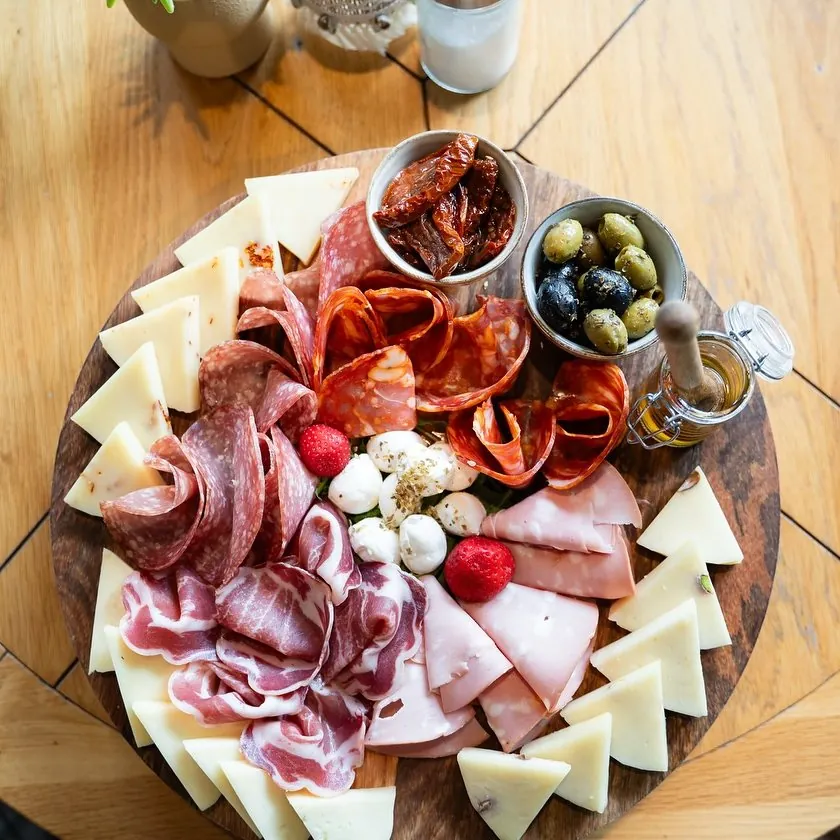

Maintenant à Dudelange
MontChalet, Dudelange · 09:00
Commencer la journée en douceur, de la meilleure des façons.
6 Am Duerf, Dudelange · Tous les jours 09:00–00:00, ven. et sam. jusqu’à 01:00
Commencer la journée en douceur, de la meilleure des façons.
Un café frais, des coins paisibles et la beauté tranquille d’un nouveau matin.
Sundays at the ChaletBrunch, chaque dimanche, 11:00–15:00
Bienvenue à la terrasse Mont ChaletSun, terrace views, and the perfect vibe.
Des saveurs à découvrir, des instants à savourer.
